Poulet vapeur, nommé d'après la cuisson à la vapeur dans un bateau à vapeur. L'ingrédient principal est le poulet, et le processus de cuisson principal est la cuisson, qui a pour effet de nourrir le corps, de nourrir le sang, de renforcer la rate et d'appétir. La chaudière à vapeur est un cuiseur à vapeur en terre cuite unique produit par Jianshui, spécialement utilisé pour la cuisson des aliments.
Le poulet chaudière à vapeur est l'un des plats célèbres du Yunnan, et il s'est répandu dans le sud du Yunnan il y a 2000 ans. A une longue histoire et culture, et un excellent goût.
Doté de pieds couverts d’une épaisse fourrure, l’ours noir, à l’instar de l’être humain, est plantigrade, foulant le sol avec toute la plante des pieds. Chacune de ses puissantes pattes est armée de cinq griffes recourbées non rétractiles dont il se sert pour creuser, arracher des racines et des souches, et déplacer de vieux troncs d’arbre, à la recherche de nourriture.
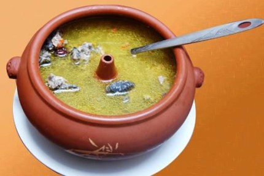Après que les Lijiang tuent les porcs en hiver chaque année, ils prennent les steaks mous (c'est-à-dire les steaks tendres) de chaque porc comme ingrédient principal pour la marinade, car il y a plus de viande dans les steaks mous. Après la cueillette, mettez le sel dans un grand pot et étalez-le uniformément, marinez, couvrez de gaze pour le maintenir ventilé et attendez un mois ou un mois et demi pour sécher à l'air avant de servir. Alors, ramenez les côtes de porc de Lijiang Wa à la maison. Quand il fait froid, vous pouvez l'utiliser pour cuisiner une marmite. Le goût est très frais! Il est plus confortable de manger avec la soupe Lijiang.
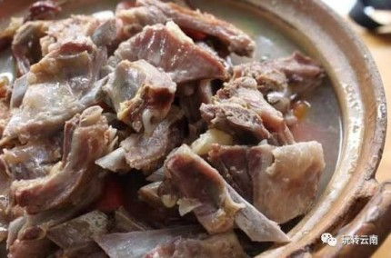L'énergie d'un plat célèbre n'est pas seulement due à sa saveur, mais aussi parce que l'histoire derrière chaque plat peut toujours impressionner les gens. Un bol de nouilles de riz, une vraie sensation, un mouvement.
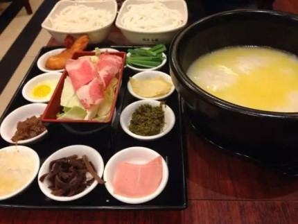Matsutake, également connu sous le nom de Tricholoma matsutake, est un champignon comestible précieux. Le matsutake frais a la forme d'un parapluie, a une couleur vive, le capuchon est brun, la tige est blanche et il y a des écailles velues fibreuses.La chair est blanche et tendre, la texture est fine et elle a un fort arôme spécial.
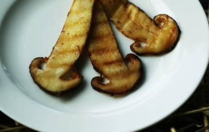Le thé Bai des trois groupes ethniques, avec son unique "amertume de tête, seconde douceur et trois arrière-goûts", est devenu un rituel pour la famille Bai de se faire des amis sous la dynastie Ming. Le thé Bai est appelé "Shao Daozhao". C'est une façon de boire du thé où l'hôte et l'hôte expriment leurs sentiments, souhaitent le meilleur et ont une couleur dramatique. Boire trois plats de thé était à l'origine utilisé par le peuple Bai pour étudier, étudier, faire des affaires et se marier. Le champ d'application s'est élargi de jour en jour, et c'est devenu la coutume de boire du thé lorsque les Bai célèbrent leur accueil.
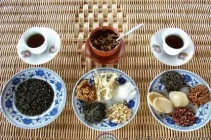Shiping, South Yunnan, est un endroit magique et magnifique où les Yi, Han et autres groupes ethniques industrieux et courageux vivent et prospèrent.Ils utilisent une sueur dure et des étincelles de sagesse pour déverser une merveilleuse culture culinaire chinoise: le tofu d'expédition.
L'expédition fait du tofu depuis plus de 400 ans. Pendant le festival, les gens de Shiping ont l'habitude de faire du tofu. Le tofu est considéré comme un grand cadeau pour les parents éloignés pour divertir les invités. Pendant son temps libre, quel que soit son âge, son sexe ou son âge, les Shiping aiment amener leur famille et inviter des amis et des parents à s'asseoir sur les étals de tofu. Une bouchée de tofu, une bouchée de thé au volant, le goût est merveilleux.
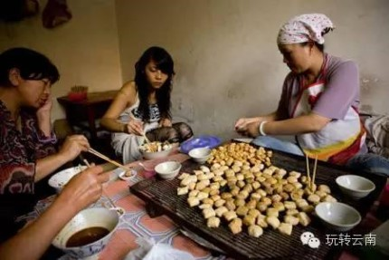Dès que le nom de ce plat est entendu, on sait qu'il y a un début. Il y a une petite histoire sur l'origine du "Grand sauvetage"; selon le bouche à oreille, le fils du sud Zhu Youlang (l'empereur Yongli) s'est enfui à Xiqiao dans le passé et vivait autrefois dans une ferme Après avoir mangé un grand bol d'appâts frits, j'ai senti un arrière-goût persistant quand j'étais plein de faim, alors j'ai été étonné et j'ai appelé ça "le grand sauvetage" sans émotion. Dès lors, "Rescue" est devenu le "sceau" de l'appât frit Tengchong, et même synonyme de fil d'appât Tengchong et de bloc d'appât.
Ce plat est principalement composé de viande fraîche, de légumes, d'oeufs, de tomates, de cornichons et d'autres ingrédients épicés, et divers ingrédients épicés sont frits dans une casserole épicée. Sa couleur est colorée, sa saveur est pleine de parfum, lisse et tendre, de sorte que Les gens mangent sans savoir quoi faire.
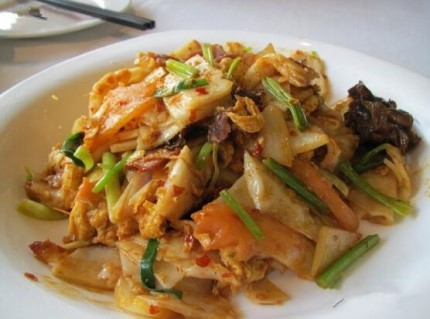 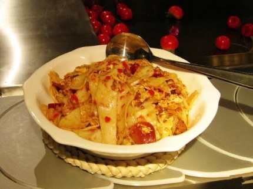Les habitants du Yunnan aiment mariner le bacon. Le bacon le plus classique du Yunnan est le jambon et les plus représentatifs sont le jambon Xuanwei et le jambon Nordeng. Il existe plusieurs façons de manger du jambon: vous pouvez le faire cuire, le manger frit, le faire cuire avec du riz, le faire cuire avec de la soupe ou le manger avec de la vapeur.
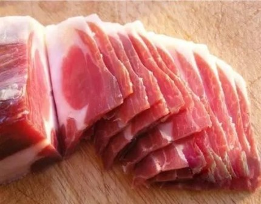Le jambon Xuanwei est produit dans le comté de Xuanwei, Yunnan. Ses principales caractéristiques sont comme un luth, seulement de gros os, une peau mince, une graisse épaisse et modérée; section ouverte coupée, arôme riche, couleur vive, couleur rouge maigre ou rose, lait maigre gras , Les os sont légèrement roses et le sang est toujours nourrissant. La qualité est assez bonne pour représenter le jambon du Yunnan, il est donc souvent appelé "jambe de nuage".
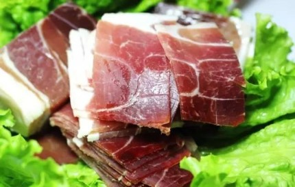Les gens du Yunnan aiment manger du bacon. Le jambon Nuo Deng est aussi une spécialité de Dali. Après avoir tué des porcs chaque année, les gens Nuo Deng gardent le meilleur jambon de porc avec du jambon cru. Le puits de sel naturel Norden, millénaire, a créé le goût unique du jambon nordique et est également apparu dans le documentaire "China on the Tongue" produit par CCTV. Sur la table du réveillon du Nouvel An, il y a généralement du vieux jambon, le goût du vieux jambon est naturellement plus fort que le goût du nouveau jambon.
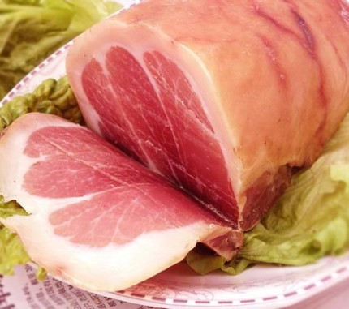Plus le jambon Norden est mariné longtemps, plus le jambon sera parfumé. Le «sel de fond de pot» du puits de sel local est utilisé pour la marinade. En "serrant" et en "pressant" le sel est absorbé sans endommager le tissu musculaire de la jambe. Enfin, saupoudrez une couche de cendres de poêle pour empêcher les insectes de rester frais.
Le gâteau aux fleurs de Kunming, comme dessert du Yunnan, convient très bien aux personnes âgées et aux enfants, il a un bon goût et il est mâché doucement avec une bouchée et plein de parfum de fleurs. Le gâteau aux fleurs est une sorte de gâteau sablé aux fleurs roses comestibles unique au Yunnan, il est un représentant des dim sum classiques du Yunnan mettant en vedette "la saveur des fleurs, la saveur du Yunnan". Par conséquent, tout le monde peut essayer et en apporter à des parents et amis lorsque vous rentrez chez vous!
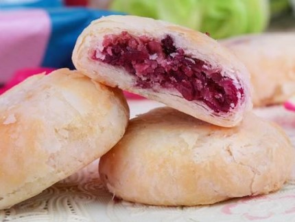Dix-huit monstres étranges du Yunnan, le lait a fait acheter un ventilateur. En tant que produit spécial de Dali, l'éventail de lait est non seulement unique en saveur et riche en nutriments, mais contient également une variété de substances telles que des protéines et des acides aminés nécessaires au corps humain. Le meilleur produit de la santé humaine. Il est délicieux et sucré, riche en nutrition et facile à transporter, c'est un cadeau pour les parents et amis.
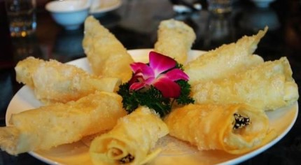Rawhide est un plat unique et délicieux à Dali. Peau crue, la langue Bai est aussi appelée "Haige". Pendant les vacances du Nouvel An, les Bai divertissent les invités avec un plat maison très spécial et une peau crue froide. En règle générale, il existe deux façons de manger de la peau crue et de la viande crue: l'une consiste à garder la peau crue et l'assaisonnement ensemble, et à manger avec l'assaisonnement; la première consiste à mélanger l'assaisonnement et la peau crue et la viande, et la peau crue Dali est unique et délicieuse. Peau crue, la langue Bai est aussi appelée "Haige". Pendant les vacances du Nouvel An, les Bai divertissent les invités avec un plat maison très spécial et une peau crue froide.
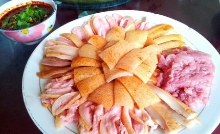